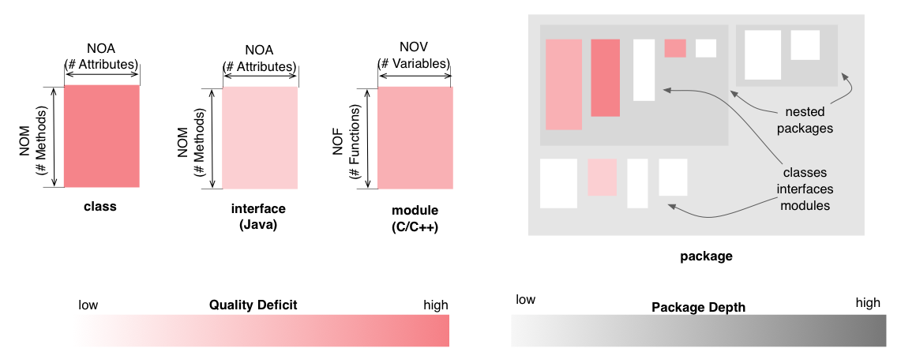

Package Map - Design Flaws Perspective
The Design Flaws Perspective of the Package Map
colors the classes, interfaces (Java) and modules (C and C++) based on
the aggregated severity of all the design flaws affecting them. This
coloring uses a white to red gradient, with darker shades of
red for higher aggregated severity.

Entity selection
The user may select a class, an interface or a module in the map, in
which case the selected entity is colored in green (with no borders). Everything else
remains the same.
Other quality perspectives
Complexity, Coupling, Encapsulation
Metrics used
NOA, NOF, NOM,
NOV